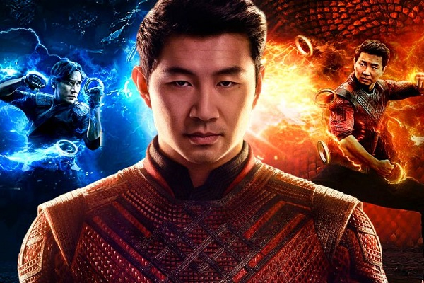
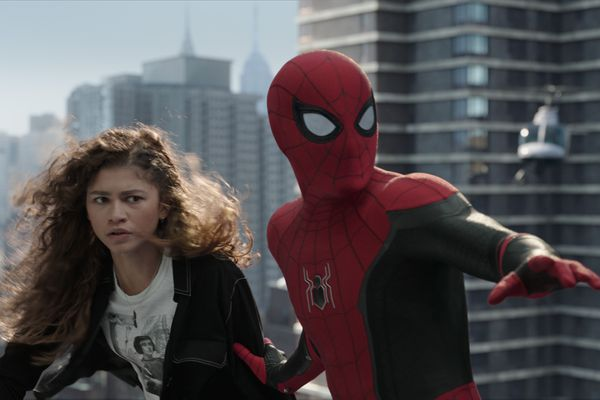
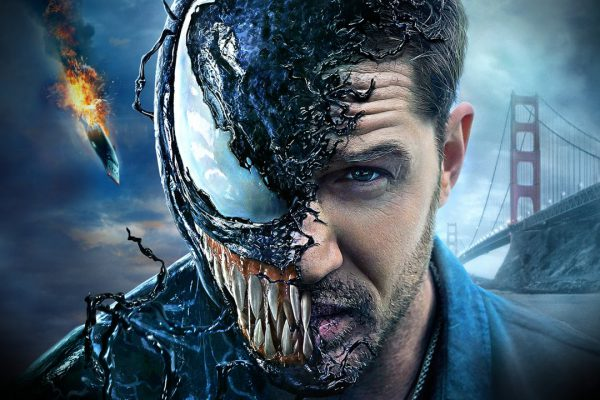
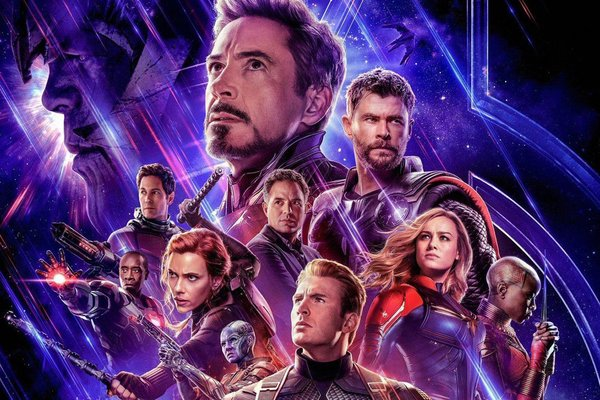
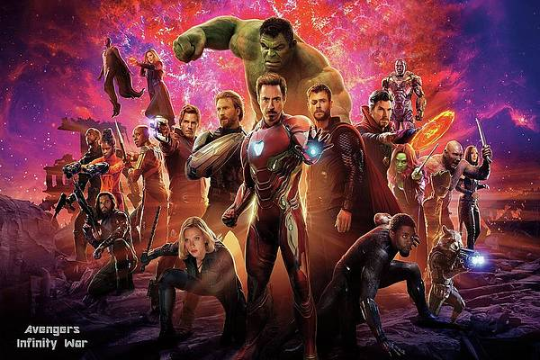
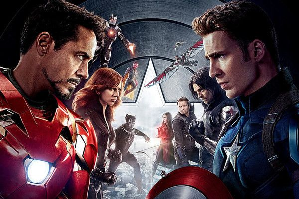
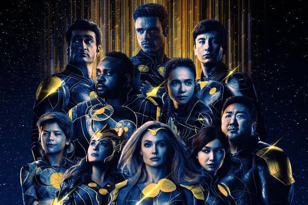
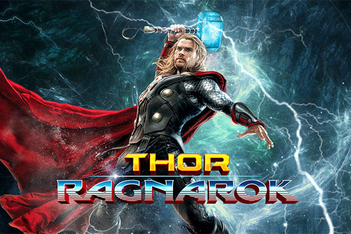
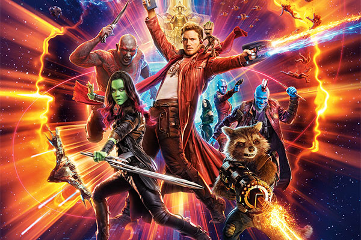
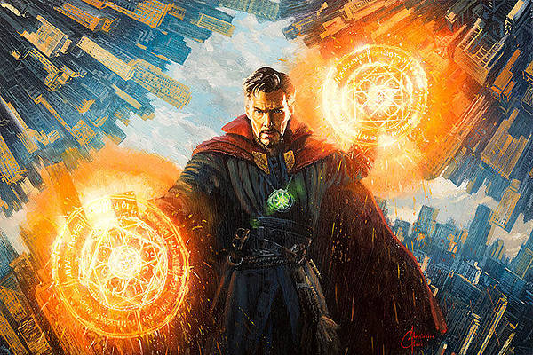

Top 1
 SHANG-CHI
A skilled martial artist who was trained at a young age to be an assassin by his father Wenwu. Shang-Chi left the Ten Rings organization for a normal life in San Francisco, and changed his name to "Shaun".
Top 2
 SPIDER-MAN NO WAY HOME
When a spell goes wrong, dangerous foes from other worlds start to appear, forcing Peter to discover what it truly means to be Spider-Man. Peter Parker's secret identity is revealed to the entire world.
Top 3
 VENOM
A failed reporter is bonded to an alien entity, one of many symbiotes who have invaded Earth. But the being takes a liking to Earth and decides to protect it. After a faulty interview with the Life Foundation ruins his career, former reporter Eddie Brock's life is in pieces.
Top 4
 AVENGERS: ENDGAME
The grave course of events set in motion by Thanos that wiped out half the universe and fractured the Avengers ranks compels the remaining Avengers to take one final stand in Marvel Studios' grand conclusion to twenty-two films, "Avengers: Endgame."
Top 5
 AVENGERS: INFINITY WAR
The Avengers and the Guardians of the Galaxy attempt to prevent Thanos from collecting the six all-powerful Infinity Stones as part of his quest to kill half of all life in the universe. The film was announced in October 2014 as Avengers: Infinity War – Part 1.
Top 6
 CAPTAIN AMERICA: CIVIL WAR
Political involvement in the Avengers' affairs causes a rift between Captain America and Iron Man. With many people fearing the actions of super heroes, the government decides to push for the Hero Registration Act, a law that limits a hero's actions.
Top 7
 ETERNALS
Following the events of Avengers: Endgame (2019), an unexpected tragedy forces the Eternals, ancient aliens who have been living on Earth in secret for thousands of years, out of the shadows to reunite against mankind's most ancient enemy, the Deviants.
Top 8
 THOR RAGNAROK
In Thor: Ragnarok, Thor must escape the alien planet Sakaar in time to save Asgard from Hela (Blanchett) and the impending Ragnarök. A third Thor film was confirmed in January 2014, when Kyle and Yost began work on the screenplay. The involvement of Hemsworth and Hiddleston was announced that October.
Top 9
GUARDIANS OF THE GALAXY VOL2
Set to the backdrop of "Awesome Mixtape #2", Marvel's Guardians of the Galaxy Vol. 2 continues the team's adventures as they traverse the outer reaches of the cosmos.
Top 10
DR. STRANGE
Marvel's "Doctor Strange" follows the story of the talented neurosurgeon Doctor Stephen Strange who, after a tragic car accident, must put ego aside and learn the secrets of a hidden world of mysticism and alternate dimensions.